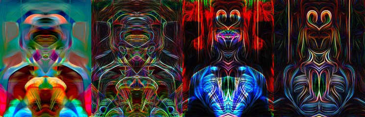

← Async Art — living works · all collections
by Hulki Okan Tabak · Async Art Master #2932 · four-phase · time rule: UTC
Updates four times a day to reflect sunrise / day / sunset / night cycles.

Sunrise 06:00–06:59 · Day 07:00–17:59 · Sunset 18:00–18:59 · Night 19:00–05:59 (UTC)
The full-size files live on IPFS; each is linked on three public gateways, in the order to try them (gateway.pinata.cloud, ipfs.io, dweb.link). Every line says what our own check found: 5 we keep this file pinned, 1 our own copy, pinned here and verified on upload.
QmZpzJVRK2dqiC… gateway.pinata.cloud · ipfs.io · dweb.link — we keep this file pinned, checked 2026-09-24 11:46QmXmUdQRSocrgg… gateway.pinata.cloud · ipfs.io · dweb.link — we keep this file pinned, checked 2026-09-24 11:46QmWbvBDSGudzii… gateway.pinata.cloud · ipfs.io · dweb.link — we keep this file pinned, checked 2026-09-24 11:46QmZMtYXrRMd9DU… gateway.pinata.cloud · ipfs.io · dweb.link — we keep this file pinned, checked 2026-09-24 11:46bafybeiflk4ncb… gateway.pinata.cloud · ipfs.io · dweb.link — our own copy, pinned here and verified on upload, checked 2026-09-22QmaY2im3snW8YH… gateway.pinata.cloud · ipfs.io · dweb.link — we keep this file pinned, checked 2026-09-24 11:46QmXmUdQRSocrgg… gateway.pinata.cloud · ipfs.io · dweb.link — we keep this file pinned, checked 2026-09-24 11:46QmXmUdQRSocrgg… gateway.pinata.cloud · ipfs.io · dweb.link — we keep this file pinned, checked 2026-09-24 11:46QmZMtYXrRMd9DU… gateway.pinata.cloud · ipfs.io · dweb.link — we keep this file pinned, checked 2026-09-24 11:46QmZpzJVRK2dqiC… gateway.pinata.cloud · ipfs.io · dweb.link — we keep this file pinned, checked 2026-09-24 11:46QmWbvBDSGudzii… gateway.pinata.cloud · ipfs.io · dweb.link — we keep this file pinned, checked 2026-09-24 11:46This piece is about finding solace and leaning on a bit of escapism in time of stress and conflict that one can not overcome by herself / himself. Sketches from a Time of Conflict finds its inspiration from the works of the Jewish surrealist painter Felix Nussbaum. Loosely based on his imagery and more firmly based on the sense of foreboding creeping in to his work, the digital sketches here are an extension of Nussbaum inspired characters I have created and minted from 2020 to 2021. The original names I had given to the underlying artworks for this final collective piece were: Sunrise - That Which is in Limbo Day - Limbo One Sketch Sunset - One of the Elders Night - Dreaming of Another…
async.art · OpenSea · Etherscan
Generated archive pages. Content identifiers point to the public IPFS network.